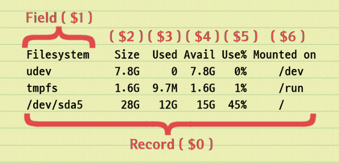
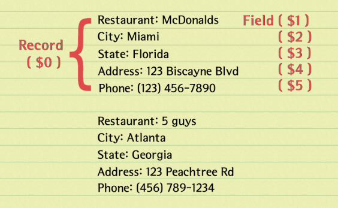

Record 분리
awk 가 파일에서 데이터를 읽어들일 때는 라인 단위로 하지 않습니다. 이것은 sed 같은 프로그램도 마찬가지로 newline, null 문자, non-printing 문자 할 것 없이 일단 일정한 블록 크기로 데이터를 버퍼에 읽어들인 후에 sed 의 경우 newline 문자를 이용해 라인을 분리해내고 awk 의 경우에는 RS 를 이용해 레코드를 분리해 냅니다. awk 의 경우는 여기서 한 단계 더 나아가 FS 에 따라 레코드에서 필드값들을 분리합니다.
레코드 분리에 관계된 builtin 변수는 RS( Record Seperator ) 와 RT( Record Terminator ) 입니다. RS 변수에 설정되는 값은 문자가 두 개 이상이면 regexp 로 해석됩니다. 그러므로 단순히 RS='XXX' 로 설정하면 "XXX" 를 만나면 레코드가 분리되지만 RS='X+' 로 설정하게 되면 이것은 "X", "XX", "XXX" ... 모두에서 분리가 됩니다. 이때 'X+' regexp 과 매칭된 값이 RT 변수에 설정되게 됩니다.
다음은 RS 값에 따라 레코드가 분리되어 $0 변수에 대입되고 RT 값이 설정되는 것을 알아보기 위한 테스트입니다.
printf 문에 (%s) 를 사용하였으므로 괄호 안의 값이 공백을 포함하여 실제 분리된 레코드 값이 됩니다.
첫 번째 예는 RS='XXX' 로 설정한 경우입니다. 입력되는 데이터에 'XXX' 가 두 개 있으므로 레코드가 세 개로 분리되고 이때 RT 값은 동일하게 'XXX' 설정되는 것을 볼 수 있습니다.
$ echo '11 X 22 XX 33 XXX 44 X+ 55 XX 66 XXX 77 Y* 88 XX 99' |
awk '
{ printf "(%s) RT : \"%s\"\n", $0, RT }
END{ print "===========\nNR : " NR }
' RS='XXX'
(11 X 22 XX 33 ) RT : "XXX"
( 44 X+ 55 XX 66 ) RT : "XXX"
( 77 Y* 88 XX 99
) RT : ""
===========
NR : 3
두 번째 경우는 RS='X+' 로 설정한 경우입니다. 입력되는 데이터 중간에 'X+' 가 하나 존재하지만 레코드가 두 개로 분리되지 않고 regexp 로 해석되어 'X+' 와 매칭 되는 모든 스트링에서 분리가 일어나고 있습니다. 이때 RT 값도 각각 매칭된 값으로 설정되고 있는것을 볼 수 있습니다.
$ echo '11 X 22 XX 33 XXX 44 X+ 55 XX 66 XXX 77 Y* 88 XX 99' |
awk '
{ printf "(%s) RT : \"%s\"\n", $0, RT }
END{ print "===========\nNR : " NR }
' RS='X+'
(11 ) RT : "X"
( 22 ) RT : "XX"
( 33 ) RT : "XXX"
( 44 ) RT : "X"
(+ 55 ) RT : "XX"
( 66 ) RT : "XXX"
( 77 Y* 88 ) RT : "XX"
( 99
) RT : ""
===========
NR : 8
다음의 경우는 앞선 예제의 'X+' 가 regexp 로 해석되는 것을 방지하고 실제 'X+' 스트링과
매칭을 시키기 위해 regexp 문자인 + 를 escape 처리 한 경우입니다.
$ echo '11 X 22 XX 33 XXX 44 X+ 55 XX 66 XXX 77 Y* 88 XX 99' |
awk '
{ printf "(%s) RT : \"%s\"\n", $0, RT }
END{ print "===========\nNR : " NR }
' RS='X\\+'
(11 X 22 XX 33 XXX 44 ) RT : "X+"
( 55 XX 66 XXX 77 Y* 88 XX 99
) RT : ""
===========
NR : 2
마지막 예는 regexp 의 OR 기능을 활용하여 실제적으로 RS 를 두 개 설정하고 있는 예입니다. 출력에 RT 값이 실제 매칭 된 값으로 표시되는 것을 볼 수 있습니다.
$ echo '11 X 22 XX 33 XXX 44 X+ 55 XX 66 XXX 77 Y* 88 XX 99' |
awk '
{ printf "(%s) RT : \"%s\"\n", $0, RT }
END{ print "===========\nNR : " NR }
' RS='X\\+|Y\\*'
(11 X 22 XX 33 XXX 44 ) RT : "X+"
( 55 XX 66 XXX 77 ) RT : "Y*"
( 88 XX 99
) RT : ""
===========
NR : 3
디폴트 값은 RS = '\n'
텍스트 데이터는 많은 경우 column, row 로 구성된 테이블 형태를 가지므로 RS 의 디폴트 값은 \n 입니다.

RS = ""
아래 그림과 같은 형식의 데이터는 레코드가 하나 이상의 공백 라인에 의해 분리됩니다.
각 필드값이 라인 하나를 차지하구요.
이때는RS='\n\n+' 로 설정하면 되는데 이렇게 하면 한가지 단점이 데이터가 시작하기 전에
공백 라인이 있을 경우 null 값 레코드가 하나 추가되거나 레코드의 처음에 newline 이 포함될 수 있습니다.
이와 같은 단점을 없애기 위해 특별히 제공하는 기능이 RS='' 입니다.
RS='' 의 의미는 RS 값이 없으므로 전체 데이터를 하나의 레코드로 보겠다는 뜻이 아니고
기능상으로는 RS='\n\n+' 와 같지만 차이점은 데이터 시작 전에 위치한 공백 라인들을 먼저 제거하여
null 값 레코드가 생기지 않게 합니다.
[ 다음은 RS='' , FS='\n' 으로 설정할 경우 ]

RS = '\0'
이것은 RS 값을 NUL 문자로 설정하는 것입니다.
예를 들면 /proc/$PID/environ 는 환경변수 값들을 NUL 문자를 구분자로 하여 가지고 있는데
다음과 같이 RS='\0' 로 설정하면 값들을 분리할 수 있습니다.
$ awk -vRS='\0' 1 /proc/$$/environ
XDG_GREETER_DATA_DIR=/var/lib/lightdm-data/mug896
LANGUAGE=en
LC_MONETARY=C.UTF-8
KDE_FULL_SESSION=true
QT_QPA_PLATFORM=xcb
KONSOLE_DBUS_SERVICE=:1.35
...
...
RS 값에 사용되는 ^, $ regexp 문자
RS 에 사용되는 ^, $ 문자는 데이터 스트링의 시작과 끝을 나타냅니다.
이것은 레코드가 아닌 전체 데이터를 말하는 것입니다.
따라서 만약에 RS 에 ^ 를 사용한다면 데이터의 시작 부분에만 매칭이 되고
$ 를 사용한다면 데이터의 마지막 부분에만 매칭이 되게 됩니다.
RS = '^$'
이것은 파일에 데이터가 존재하는 한 매칭이 되지 않으므로 파일을 한 번에 전부 읽어들일 때 사용할 수 있습니다.
function readfile(file, tmp, save_rs)
{
save_rs = RS
RS = "^$"
getline tmp < file
close(file)
RS = save_rs
return tmp
}
RS = '(.)' 또는 RS = '|.'
문자가 두개 이상이면 regexp 로 해석되죠. ( ) 는 regexp group 에 사용되는 문자인데
여기서는 단지 . 문자가 regexp 로 해석되게 하는 역할만 합니다.
임의의 문자 하나가 RS 가 되면 결과적으로 $0 값은 null 이되고 RT 값만 해당 문자로 설정되게 됩니다.
$ echo -n '1234567890' | awk 'END{ print NR }' RS='(.)'
10
$ echo -n '1234567890' | awk '{ printf RT ":" }' RS='|.'
1:2:3:4:5:6:7:8:9:0:
# 20 개의 random 문자를 갖는 스트링 10 개를 생성
$ tr -dc '[:graph:]' < /dev/urandom | awk -v RS='.{20}' '{ print RT } NR==10{ exit }'
tQ2H-:C7Z{@F=S!V>[5w
o)MECUO<]|e;G8O$?6O!
090f1qcMb5'e'r`_hqOQ
d4*wx?dwi(*y%<&P66{b
i|Hs-e2Y~f"8*%pd?sj^
c,?<NY)q<SEONyPHC2K_
sHGlMN9&STFyw~VfDZyE
93_u`9yEl"Iui"9;'__#
YF`BLQ{TG:Xos'xEhWFi
tYb!;,%{T`iU:f[G'BQ|
Quiz
다음과 같은 데이터 파일이 있을 경우 RS 를 RS='{[A-Z0-9]+}' 로 설정한다면 전체 레코드 개수는 몇 개가 될까요?
$ cat file
{ITEM001}
111
222
333
{ITEM002}
444
555
666
{ITEM003}
전체 레코드 개수는 총 4 개가 됩니다.
$ awk 'BEGIN{ RS="{[A-Z0-9]+}" }
{
printf "%s. (%s) %s\n", NR, $0, RT
print "--------------"
}' file
1. () {ITEM001} # null 레코드
--------------
2. (
111
222
333
) {ITEM002}
--------------
3. (
444
555
666
) {ITEM003}
--------------
4. ( # newline 레코드
) # RT 값은 null
--------------